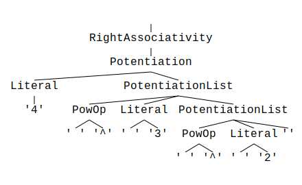

The parol Parser Generator
parol is a parser generator with unique features.
It is available as a command-line tool that generates complete parsers from a single grammar
description file. parol is also a library you can use in your own crates.
With its builder API, you can easily integrate code generation into your crate's build process via a
Cargo build script (build.rs).
parol automatically infers and generates all AST data types by analyzing your language's grammar
description.
You can control AST type generation in several ways:
- Mark elements to omit from your AST.
- Specify custom types for language elements, which are inserted at the correct position in the resulting AST type.
- Define how each symbol on the right-hand side of a production is named in the generated structure.
Language description and implementation are strictly separated in parol. You can design your
grammar without processing anything, as generated parsers function by default as acceptors. This
enables rapid prototyping of your grammar.
parol generates a trait that serves as the interface between the generated parser and your
language processing. The trait contains functions for each non-terminal in your grammar, which you
can implement as needed. In the simplest case, you implement the trait function for the start symbol,
which is called after the entire input string is parsed. This function receives a parameter
representing the complete structure of the parsed document.
The parser automatically calls the interface trait's functions via a separately generated adapter during parsing.
parol provides an ecosystem of tools, including a
Visual Studio Code Extension and
a Language Server.
Generated parsers can recover from syntax errors automatically. This means the parser does not stop parsing after the first syntax error, but instead tries to synchronize with the input and continue analysis.
History of This Project
The parol parser generator began as a personal journey to master LL(k) parsing using deterministic
finite automata.
Two parser generators, with contrasting approaches, significantly influenced its design:
Both have unique quirks and idiosyncrasies.
Bison often produces shift/reduce or reduce/reduce conflicts that can be difficult to understand. ANTLR generates recursive descent parsers, which are prone to stack overflows. It is easy to write (or generate) a program that crashes a parser generated by ANTLR. E.g., you can generate a deeply nested expression with 6000 nested parenthesis.1
However, Bison generates deterministic parsers using finite automata, and ANTLR also uses deterministic finite automata to select the next production for a non-terminal.
This led to the question: Why not combine the best of both worlds?
With this goal, I began my first attempts using F# (Lelek). Eventually, I discontinued this project because it no longer felt right.
Lelek was a necessary step to understand what is feasible and what is not.
After several attempts, I transitioned to Rust, which felt more vibrant and compelling.
Thus, parol was born—initially as a rewrite of Lelek. I was willing to discard some parts of Lelek
and introduce new approaches.
What I Retained
- The basic approach of using regexes to generate scanners
- Using DFAs to solve the Rule Decision Problem, although I changed the method for obtaining k-sets for productions
- The foundational ideas behind the grammar description language and its resemblance to Bison's input format
- The separation of language description and implementation
- The strategy to check a grammar for preconditions before generating parser data, ensuring termination of certain algorithms
- The algorithm for visualizing parse trees
What I Changed
- Recursion detection
- Generation of k-sets for productions (including algorithms for FIRST(k) and FOLLOW(k))
- Terminology: I now prefer 'Production' over 'Rule'
- The parser runtime was separated into a small crate
What I Added
- Automatic inference and generation of all types for the grammar's AST, making the grammar description sufficient for
parolto build a fully functional acceptor with no extra effort—enabling real rapid prototyping for your language! - Built-in tools for:
- Generating new crates
- Checking a grammar for properties (left-recursion, reachability, productivity)
- Left-factoring a grammar
- Calculating FIRST(k) and FOLLOW(k) sets
- Generating random sentences from a grammar description
- Scanner states, also known as start conditions
- Build script integration to invoke
parolautomatically during your crate's build process - A Visual Studio Code extension and a Language Server
- Optional support for LALR(1) grammars in addition to LL(k)
- Features that Lelek never received
-
To be fair, parol is not immune from stack overflows. In deeply nested expressions the built up data structures become deeply nested as well. Some compiler-generated trait implementations like
CloneorDropthe can then also create stack overflows. But this can be circumvented by carefully implementing such traits on your own. ↩
Getting Started
Installation
Before you can use parol, you need to install it.
Since parol generates Rust code, a Rust toolchain must be installed. If you do not have Rust,
visit Rustup or Install Rust.
parol requires only stable Rust.
To install parol on your platform, run:
cargo install parol
To verify the installation, execute:
parol -V
parol 4.0.1
If you see an error indicating the tool could not be found, check your PATH variable. It should
include ~/.cargo/bin.
Video Introduction
For a visual introduction, watch the introductory video on YouTube.
Generate a Crate with parol
Use the parol new subcommand to create a new project:
parol new --bin --path ./my_grammar
Change into the new project folder and start the initial build. parol will generate two files from
the initial grammar definition.
cd ./my_grammar
cargo build
You can safely ignore the
#[warn(unused_imports)]warning for now. It will disappear as the grammar receives more content.
Run the test with the generated parser:
cargo run ./test.txt
Finished `dev` profile [unoptimized + debuginfo] target(s) in 0.87s
Running `target\debug\my_grammar.exe ./test.txt`
Parsing took 0 milliseconds.
Success!
MyGrammar { my_grammar: Token { text: "Hello world!", token_type: 5, location: Location {
start_line: 4, start_column: 5, end_line: 4, end_column: 17, start: 62, end: 74, file_name:
"./test.txt" }, token_number: 2 } }
parol has generated a complete parser with AST types suitable for your grammar description.
Now, open your preferred editor:
code .
Edit the grammar description in my_grammar.par to fit your requirements. Any subsequent invocation
of cargo build will trigger parol to regenerate the derived sources automatically if
my_grammar.par has changed.
This is all you need to set up a working development environment.
VS Code Extension and Language Server
A VS Code extension, parol-vscode, is available.
Install this extension from the VS Code Marketplace. It provides syntax highlighting, folding, and language icons, which will be useful for you.
The extension utilizes a Language Server that must be installed separately.
cargo install --force parol-ls
The syntax of parol's Grammar description
I provide the definition of the PAR grammar in PAR grammar itself.
This grammar is quite concise and most programmers should be familiar with it. But there are several specialties which will be described here. First please notice the built-in support for language comments.
Using the %line_comment and %block_comment constructs you can easily define your language's
comments. For example you can define comments like it's done in the calc example
calc.par:
%line_comment "//"
%block_comment "/\*" "\*/"
You can supply more than one of these two comment declarations. They will all be considered as valid comments.
As opposed to EBNF you use C-like line comments starting with two slashes (//) and bock comments (/* ... */) in PAR files. This is a result of the close relationship between PAR grammar and bison's grammar.
parol doesn't simply discard language comments. They are provided during
parse process via a new method <UserType>GrammarTrait::on_comment which is called for each
single comment in order of their appearance each time before the parser consumes a normal token from
token stream.
The method is default implemented and the user have to provide an own implementation if she is
interested in language comments.
This is a minimal support but can greatly improve the usability.
Defining the grammar type
In the global header section you can define the grammar type you want to use in your grammar description.
The default grammar type is LL(k) and can be omitted.
%grammar_type 'LL(k)'
You have the option to use LALR(1) grammar type this way.
%grammar_type 'LALR(1)'
Case sensitivity
Non-terminals are treated case sensitive, i. e. "list" and "List" are different symbols. But it is not encouraged to rely on this in your grammar definition. It is much better to keep a consistent style on casing in your description.
Sections
parols's input language consists of two sections divided by the %% token. Above there are
declarations of which only the first %start declaration is mandatory. It declares the start symbol
of your grammar.
The second section below the %% token contains the actual grammar description in form of several
productions. At least one production must exist.
The start symbol
It is important to note that the start symbol of the grammar must always be declared with the
%start declaration. It is the very first declaration in the PAR file.
%start Grammar
Scanner control
A scanner (aka lexer) is automatically created from all used terminal symbols. Terminal symbols can also be associated with different scanner states. See section Scanner states below for more details.
Newline handling
The scanner per default skips newlines automatically. To suppress this use the %auto_newline_off
directive.
With this you have to handle newline tokens on your own in your grammar.
Whitespace handling
The scanner also per default skips whitespace automatically. To suppress this use the %auto_ws_off
directive.
With this you have to handle whitespace tokens on your own in your grammar.
Terminal name generation
The names of the terminals are deduced from the content of the terminal itself. For instance, for a terminal ":=" it creates the terminal name "ColonEqu", see generated parser for Oberon-0. If you want this name to be more expressive, you can dedicate a separate production to the terminal, lets say:
Assign: ":=";
With this trick you define a so called "primary non-terminal for a terminal" (I coined it this way) that instructs the name generation to name the terminal "Assign".
Terminal representation
parol supports three different styles of terminal representations, all of them being valid and
allowed.
- The string syntax (
"..."). These terminals are treated as if they were regular expressions. - The single quoted string literals (
'..') are literals or raw strings. The user doesn't need to escape any regex meta character. This is used when you don't want to deal with regexes and only use plain text. E.g.:BlockBegin: '{' - The regular expression strings (
/../), behaves exactly like the double quoted string, i.e. they are treated as regular expressions but this style better conveys the intent. E.g.:Digits: /[\d]+/;
Internally parol creates scanners on the basis of the scnr2 crate and all terminals are
expressed as regular expressions eventually. You should be aware of this if you get strange errors
from regex generation and want to understand the problem.
Here is an example for a terminal in regular expression form:
AddOperator: /\+|-/;
Terminal conflicts
- Parol's scanner follows the longest match rule
- Conflicts can only occur, if the matched tokens have the same length and are accepted by more than one terminal type. In case of such a conflict between different terminals, terminals defined earlier in the grammar have higher priority than those defined later. This allows you to influence the priority of tokens with equal length. In all other cases, tokens with the longest match are preferred.
For example, if you have two terminals "-" and "--", Minus and Decr, the scanner will match based on the longest match basis:
Decr: /--/
;
Minus
: /-/
;
An input string ----- will match the decrement operator twice and then the minus operator once.
As an example for tokens with the same length consider following terminal definitions:
// ❌
Ident: /[a-zA-Z_][a-zA-Z0-9_]*/
;
If: 'if'
;
In case of same length, the scanner will match based on the order of definition:
On input if it will match the Ident first. To make this work you have to move the terminal If
before the more general Ident:
// ✅
If: 'if'
;
Ident: /[a-zA-Z_][a-zA-Z0-9_]*/
;
Defining If before Ident ensures the correct priority.
Conclusion
❗ These two mechanisms, longest match rule and priority by order, gives you control over terminal conflicts.
Terminals that matches an empty string
Please note that terminals should always match non-empty text portions. This means that you have to avoid terminals like this:
/a?/, /a*/
Internally the tokenizer will enter a loop and match the empty string over and over again without
making progress in the input. Currently there is no check for this scenario in parol_runtime.
There is a workaround when you simply need possibly empty tokens, at least for the ? and *
ones.
Make the token + and put their uses in optional expressions []. This makes them non-empty and
also their possible emptiness explicit for the grammar:
RuleWithWhiteSpaces: WhiteSpaces;
WhiteSpaces: /[ \t]*/;
// =>
RuleWithWhiteSpaces: [ WhiteSpaces ];
WhiteSpaces: /[ \t]+/;
Scanner states
Parol supports multiple scanner states. This feature is known from Flex as
Start conditions
and provides more flexibility in defining several scanners for several parts of your grammar.
Parol provides two different ways to control scanner states directly within your grammar
description thereby holding the principle of strict separation of grammar description and grammar
processing in semantic actions. This means no scanner switching in your code, but in the grammar
description. Only because of this rapid prototyping is possible.
The Default scanner state INITIAL
INITIAL is the name of the default scanner state 0. Its behavior is defined with ScannerDirectives
in the global Declaration section, such as:
%line_comment "//"
%block_comment "/\*" "\*/"
Introduce new scanner states with the %scanner directive
Use the %scanner Name {...} construct after the global Declaration section and before the %%
sign to introduce arbitrary scanner states. The identifier following the %scanner token defines the
name of the state which is used to refer to it from scanner state lists at terminals.
%scanner String {
%auto_newline_off
%auto_ws_off
}
%scanner Pragma {
%block_comment "\{" "\}"
}
You can place any of the ScannerDirectives within the block that defines the scanner state.
By default each scanner handles (and skips) whitespace and newlines. Use %auto_newline_off and
%auto_ws_off to modify each scanner state appropriately.
Associate terminals with scanner states by prefixing them with a list of comma separated state names in angle brackets. Like this:
StringDelimiter
: <String, INITIAL>/"/
;
Scanner state references in different occurrences of the same terminal are accumulated. I.e.,
<State1>"term"
...
<State2>"term"
will result in
<State1, State2>"term"
Terminals without explicitly associated scanner state are implicitly associated with scanner state INITIAL.
Scanner switching
Scanner-based scanner switching in Parol is managed by the scanner using the %enter, %push, and
%pop directives within the scanner specification:
%enter: Switches the scanner to a specific mode, replacing the current mode.%push: Pushes the current mode onto a stack and enters a new mode.%pop: Returns to the previous mode by popping the mode stack.
These directives ensure that scanner mode switching is handled consistently and reliably, preventing
token buffer desynchronization in LL(k) grammars with k > 1. All scanner-related features are based
on the scnr2 crate.
Example usage:
%on Rem %enter Cmnt
%on If, AssignOp, Print %enter Expr
%scanner Cmnt {
%auto_newline_off
%on EndOfLine %enter INITIAL
}
%scanner Expr {
%auto_newline_off
%on Then, Goto, EndOfLine %enter INITIAL
}
After the %on directive, specify a list of primary non-terminals. After the %enter directive,
specify the target scanner state. %push and %pop provide stack-based mode management.
Mixing parser-based and scanner-based switching in one grammar file is not allowed and will result in errors.
Parol generates all data required by scnr2 to construct valid and efficient scanners. Users do not
need to understand the internal configuration of scnr2.
Controlling the AST generation
Omitting grammar symbols from the AST
You can suffix grammar symbols (terminals and non-terminals) with a cut operator (^). This
instructs parol to not propagate them to the AST.
Group: '('^ Alternations ')'^;
The AST type for the symbol Group will then only contain a member for the non-terminal
Alternations. The parentheses are left out.
Assigning user types to grammar symbols
You can specify a user type to be inserted into the AST structure at the place where the symbol
would otherwise had the originally generated type.
Add after a grammar symbol a colon followed by a user type name to instruct parol to use this type
instead. In your language implementation you have to provide fallible conversions from references of
the original generated types (&T) to your types (U) by implementing the trait
TryFrom<&T> for U.
An examples can be found in the list example.
#![allow(unused)] fn main() { impl<'t> TryFrom<&Token<'t>> for Number { type Error = anyhow::Error; fn try_from(number: &Token<'t>) -> std::result::Result<Self, Self::Error> { Ok(Self(number.text().parse::<u32>()?)) } } }
You can also define aliases for the user type names by inserting as many %user_type directives as
you want.
%user_type Number = crate::list_grammar::Number
Then use these aliases behind the colons.
Num: "0|[1-9][0-9]*": Number;
Define user types for non-terminals
As of version 3.0 you can easily define a user type to which each occurrence of a certain non-terminal should be automatically converted to. This is done like in the following example:
%nt_type ScannerState = crate::parser::parol_grammar::ScannerConfig
It is similar to the already available %user_type with what you could define an alias for a
user defined type which in turn you could apply to single symbols on the right-hand side of
grammar productions. The %nt_type can't be used on terminals but it makes the application to
non-terminals much easier.
Here is the old version used in parol itself before (only partial)
%user_type ScannerConfig = crate::parser::parol_grammar::ScannerConfig
// ...
%%
// ...
Prolog
: StartDeclaration { Declaration } { ScannerState: ScannerConfig }
;
And here is the new variant in which %nt_type is used.
%nt_type ScannerState = crate::parser::parol_grammar::ScannerConfig
// ...
%%
// ...
Prolog
: StartDeclaration { Declaration } { ScannerState }
;
The non-terminal ScannerState was automatically defined the be converted to ScannerConfig.
It is semantically completely identical to use %user_type and the application of it to each
occurrence of the non-terminal in the grammar explicitly.
User defined terminal type
As of version 3.0 you can easily define a user type to which each occurrence of a terminal should be automatically converted to. This is done like in the following example:
%t_type crate::parol_ls_grammar::OwnedToken
There can be only one type defined to which all terminals are converted to.
More specifically, if several such instructions are given, the last one wins.
Here is the old version used in parol-ls itself before (only partial)
%user_type OwnedToken = crate::parol_ls_grammar::OwnedToken
// ...
%%
// ...
ScannerSwitch
: "%sc": OwnedToken '(': OwnedToken [ Identifier ] ')': OwnedToken
| "%push": OwnedToken '(': OwnedToken Identifier ')': OwnedToken
| "%pop": OwnedToken '(': OwnedToken ')': OwnedToken
;
And here is the new variant in which %t_type is used.
%t_type crate::parol_ls_grammar::OwnedToken
// ...
%%
// ...
ScannerSwitch
: "%sc" '(' [ Identifier ] ')'
| "%push" '(' Identifier ')'
| "%pop" '(' ')'
;
All terminals are automatically defined the be converted to crate::parol_ls_grammar::OwnedToken.
Define user defined member names
As of version 3.0 you can specify for each symbol on the right-hand side of a production how its corresponding member in the generated struct should be named.
To achieve this you can use the newly introduced @ operator.
Declaration :
...
| "%nt_type" Identifier@nt_name "="^ UserTypeName@nt_type
...
In this example the member for Identifier in the production will be named nt_name and the member
for UserTypeName will receive the name nt_type in the generated struct type for this production.
Semantic actions
Semantic actions are strictly separated from your grammar description. You will use a generated trait with default implementations for each non-terminal of your grammar. You can implement this trait in your grammar processing item and provide concrete implementations for those non-terminals you are interested in.
In the chapter Operator Precedence there are some examples on how to implement simple semantic actions.
A separate chapter Semantic Actions deals more deeply with this topic.
Operator Precedence
Operator precedence is implemented through grammar definitions. By placing higher-priority elements into sub-categories, you force the parser to branch into those first, resulting in earlier evaluation.
Consider the following example:
%start Precedence
%title "Operator precedence"
%comment "Shows the handling of operator precedence in `parol`"
%%
// ---------------------------------------------------------
// VARIABLE
Variable: /(?i)[A-Z][0-9A-Z]*/ ;
Literal : /[0-9]+/ ;
// ---------------------------------------------------------
// OPERATOR SYMBOLS
Plus : '+' ;
Minus : '-' ;
MulOp : "\*|/" ;
// ---------------------------------------------------------
// PARENTHESIS
LParen : '(' ;
RParen : ')' ;
// ---------------------------------------------------------
// EXPRESSIONS in order of increasing precedence
Precedence : Summation ;
Summation : Multiplication { (Plus | Minus) Multiplication } ;
Multiplication : Factor { MulOp Factor } ;
Factor : Literal
| Variable
| Minus Factor
| LParen Precedence RParen ;
Parsing the string -1 + x * 5 with the generated parser produces the following parse tree:

Notice that the innermost operator is evaluated first by the parser—here, the negation in the
Factor production.
Multiplication is the second-highest priority in this example, as it is a sub-category of
Summation.
To try this grammar, run:
parol new --bin --path .\precedence --tree
Replace the generated dummy grammar with the example above. Also, set test.txt to:
-1 + x * 5
Parse the text by running:
cargo run ./test.txt
from the root of the generated crate.
Because the --tree flag was used with parol new, parse trees are generated automatically. Look
for a test.svg file next to test.txt.
It is recommended to use parse tree generation during grammar development and remove it when deploying your parser in production.
However, the parse tree can be useful in certain scenarios. Because it's lossless, it also includes otherwise discarded tokens like spaces.
How do I implement the grammar processing?
You should have a look at the example calc.
Basically, the grammar processing is implemented in the calc_grammar.rs.
The struct CalcGrammar contains a collection of variables and their values called env.
It also contains a stack of values that holds the intermediate results during the calculation:
#![allow(unused)] fn main() { pub calc_results: Vec<DefinitionRange>, pub env: BTreeMap<String, DefinitionRange>, }
You can extend the struct PrecedenceGrammar in src\precedence_grammar.rs the same way.
Now you can implement selected semantic actions from the PrecedenceGrammarTrait. Look at the
generated src\precedence_grammar_trait.rs. It contains all available semantic actions which are
bound to non-terminals.
To implement for instance the variable action, copy the fn variable... block into the
#![allow(unused)] fn main() { impl<'t> PrecedenceGrammarTrait<'t> for PrecedenceGrammar<'t> { } }
This way:
#![allow(unused)] fn main() { impl<'t> PrecedenceGrammarTrait<'t> for PrecedenceGrammar<'t> { /// Semantic action for non-terminal 'Variable' fn variable(&mut self, _arg: &Variable<'t>) -> Result<()> { Ok(()) } /// Semantic action for non-terminal 'Precedence' fn precedence(&mut self, arg: &Precedence<'t>) -> Result<()> { self.precedence = Some(arg.clone()); Ok(()) } } }
Now you can handle any variable. Because our grammar has no assignment yet, the function is simple.
It tries to retrieve the variables value from the env. If the variable is not found in the env
it creates a new entry with default value 0. Then it pushes this value on the calc_results vector
for later processing:
#![allow(unused)] fn main() { /// Semantic action for non-terminal 'Variable' fn variable(&mut self, var: &Variable<'t>) -> Result<()> { // Try to find the variable in the environment let value = if let Some(value) = self.env.get(var.variable.text()) { *value } else { // Insert default value for unassigned variable self.env .insert(var.variable.text().to_string(), DefinitionRange::default()); DefinitionRange::default() }; self.calc_results.push(value); Ok(()) } }
Don't forget to use the type Variable from the module precedence_grammar_trait.
To see the results modify the Display implementation of PrecedenceGrammar to show the intermediate
results and the environment.
#![allow(unused)] fn main() { impl Display for PrecedenceGrammar<'_> { fn fmt(&self, f: &mut Formatter<'_>) -> std::result::Result<(), Error> { writeln!( f, "Result stack\n{}", self.calc_results .iter() .rev() .map(|e| format!("{}", e)) .collect::<Vec<String>>() .join("\n") )?; writeln!( f, "\nEnv\n{}", self.env .iter() .map(|(i, v)| format!("{} = {}", i, v)) .collect::<Vec<String>>() .join("\n") ) } } }
cargo run ./test.txt
Parsing took 0 milliseconds.
Success!
Result stack
0
Env
x = 0
As expected the variable x has been inserted into the environment with default value 0.
The Value 0 is still on the stack.
Now the next step could be to implement the semantic action for non-terminal Literal:
#![allow(unused)] fn main() { /// Semantic action for non-terminal 'Literal' fn literal(&mut self, lit: &Literal<'t>) -> Result<()> { // Convert the integer literal to its value let lit = lit .literal .text() .parse::<DefinitionRange>() .map_err(|e| parol!(format!("Cannot convert literal to integer: {}", e)))?; // Push it onto the calculation stack self.calc_results.push(lit); Ok(()) } }
cargo run ./test.txt
Parsing took 0 milliseconds.
Success!
Result stack
5
0
1
Env
x = 0
Now I think you could continue on your own. Implement the binary operations by taking the two top most numbers from the calculation stack and push the result on the stack again. If all is implemented correctly the end result of the calculation should be laying as single value on top of the calculation stack.
-1 + x * 5 should the result into -1 + 0 * 5 => -1.
Now you could add assignments to your Grammar to be able to use variables to store and access values. Allow the grammar to contain multiple operations and remove assigned values from the calculation stack.
Operator Associativity
Operator associativity defines the direction in which operators of the same precedence are evaluated.
Left Associativity
Left associativity means operators are grouped from the left. For example, x * y * z is evaluated
as (x * y) * z.
Consider this example grammar, which supports left-associative multiplication:
%start LeftAssociativity
%title "Operator associativity"
%comment "Shows the handling of operator associativity in `parol`"
%%
Literal : /[0-9]+/ ;
// ---------------------------------------------------------
// OPERATOR SYMBOLS
MulOp : '*' ;
// ---------------------------------------------------------
// EXPRESSIONS
LeftAssociativity : Multiplication ;
Multiplication : Literal { MulOp Literal } ;
To try this grammar:
parol new --bin --path .\left_associativity --tree
Replace the generated dummy grammar with the example above. Set test.txt to:
5 * 6 * 2
Parse the text by running:
cargo run ./test.txt
from the root of the generated crate.
Parsing 5 * 6 * 2 produces this parse tree:

At first glance, the parse tree may appear to impose right associativity (evaluated right to left).
However, in parol, all repetitive grammar constructs are represented as vectors in AST types.
Example from the generated types in src/left_associativity_grammar_trait.rs:
#![allow(unused)] fn main() { /// Type derived for non-terminal Multiplication pub struct Multiplication<'t> { pub literal: Box<Literal<'t>>, pub multiplication_list: Vec<MultiplicationList<'t>>, } /// Type derived for non-terminal MultiplicationList pub struct MultiplicationList<'t> { pub mul_op: Box<MulOp<'t>>, pub literal: Box<Literal<'t>>, } }
Items in repetitions ({...}) are stored in vectors and can be processed in the desired direction.
This behavior applies to all grammar repetitions.
It is up to your grammar processing to choose the evaluation direction. To implement left
associativity, apply these changes to src/left_associativity_grammar.rs:
Replace the use statements at the top of the file:
#![allow(unused)] fn main() { use crate::left_associativity_grammar_trait::{ LeftAssociativity, LeftAssociativityGrammarTrait, Literal, }; use parol_runtime::Result; #[allow(unused_imports)] use parol_runtime::parol_macros::{bail, parol}; use std::fmt::{Debug, Display, Error, Formatter}; }
Add a result member to the struct:
#![allow(unused)] fn main() { pub struct LeftAssociativityGrammar<'t> { pub left_associativity: Option<LeftAssociativity<'t>>, pub result: u32, } }
Add these functions to the impl LeftAssociativityGrammar<'_> block:
#![allow(unused)] fn main() { fn number(literal: &Literal) -> Result<u32> { literal .literal .text() .parse::<u32>() .map_err(|e| parol!("'{}': {e}", literal.literal.text())) } fn process_operation(&mut self) -> Result<()> { if let Some(grammar) = &self.left_associativity { let init = Self::number(&grammar.multiplication.literal)?; self.result = grammar .multiplication .multiplication_list .iter() .try_fold(init, |acc, mul| -> Result<u32> { Ok(acc * Self::number(&mul.literal)?) })?; Ok(()) } else { bail!("No valid parse result!") } } }
Update the Display implementation:
#![allow(unused)] fn main() { impl Display for LeftAssociativityGrammar<'_> { fn fmt(&self, f: &mut Formatter<'_>) -> std::result::Result<(), Error> { match &self.left_associativity { Some(_) => writeln!(f, "{}", self.result), None => write!(f, "No parse result"), } } } }
Change the last line of the left_associativity function from:
#![allow(unused)] fn main() { Ok(()) }
to:
#![allow(unused)] fn main() { self.process_operation() }
Run the parser again:
cargo run ./test.txt
Sample output:
Parsing took 0 milliseconds.
Success!
60
The parser correctly calculates the result: 60.
The key part is the process_operation function, which folds the multiplication results into
result. The initial value is the first element (literal) of the Multiplication struct,
matching the grammar structure:
Multiplication : Literal { MulOp Literal } ;
Right Associativity
Right associativity means operators are grouped from the right. For example, x ^ y ^ z is
evaluated as x ^ (y ^ z).
Here is a grammar for right-associative potentiation:
%start RightAssociativity
%title "Operator associativity"
%comment "Shows the handling of operator associativity in `parol`"
%%
Literal : /[0-9]+/ ;
// ---------------------------------------------------------
// OPERATOR SYMBOLS
PowOp : '^' ;
// ---------------------------------------------------------
// EXPRESSIONS
RightAssociativity : Potentiation ;
Potentiation : Literal { PowOp Literal } ;
To try this grammar:
parol new --bin --path .\right_associativity --tree
Replace the generated dummy grammar with the example above. Set test.txt to:
4 ^ 3 ^ 2
Parse the text by running:
cargo run ./test.txt
from the root of the generated crate.
Parsing 4 ^ 3 ^ 2 produces this parse tree:

The parse tree structure is identical to the left-associative example. parol handles all
repetitive constructs as vectors.
To implement right associativity, modify src/right_associativity_grammar.rs as in the
left-associativity example, changing prefixes from Left/left_ to Right/right_.
Replace the process_operation function with:
#![allow(unused)] fn main() { fn process_operation(&mut self) -> Result<()> { if let Some(grammar) = &self.right_associativity { self.result = grammar .potentiation .potentiation_list .iter() .rev() .try_fold(1, |acc, mul| -> Result<u32> { Ok(Self::number(&mul.literal)?.pow(acc)) })?; let last = Self::number(&grammar.potentiation.literal)?; self.result = last.pow(self.result); Ok(()) } else { bail!("No valid parse result!") } } }
Here, the fold is performed in reverse order (.rev()), starting with 1, and the last operand is
the single literal in the Potentiation struct.
Run the parser again:
cargo run ./test.txt
Sample output:
Parsing took 0 milliseconds.
Success!
262144
The parser correctly calculates the result: 262144.
AST Generation
parol can automatically generate all types implied by your grammar. It analyzes every production
in your grammar.
Grammar Transformation
The first step is to canonicalize your grammar by applying the following transformations:
- All EBNF constructs—optional elements, repetitions, and groupings—are replaced with equivalent
representations:
A: [B];→A: BOpt; BOpt: B; BOpt: ;A: {B};→A: BList; BList: B BList; BList: ;A: (B);→A: BGroup; BGroup: B;
- Alternations are expanded into multiple productions:
A: B | C;→A: B; A: C;
These transformations are applied iteratively until all EBNF constructs are eliminated.
Note: Transformations for LR grammars differ slightly, but the principle remains the same.
Sanity Checks
Next, parol checks the transformed grammar for properties that would prevent successful processing:
- Left recursion
- Non-productive non-terminals
- Unreachable non-terminals
If none of these issues are present, the grammar is left-factored to reduce the number of required lookahead symbols.
The Expanded Grammar
The fully transformed grammar serves as the basis for parser generation and is typically saved for
reference. By convention, this "expanded" grammar is stored in files named <original-name>-exp.par.
Type Inference
With the transformed grammar, all productions take the form:
[v: s*;]
where \(v \epsilon V, s \epsilon (V \cup \Sigma)\), \(V\) is the set of non-terminals, \(\Sigma\) is the set of terminals.
At this stage, the relationship between generated productions and their original EBNF constructs is lost.
However, since it is necessary to know if a set of productions originated from an optional construct
([...]), parol maintains this relationship throughout the transformation process. This allows it
to infer types such as Rust's Option<T>.
For example, using the transformation above:
A: [B]; → A: BOpt; BOpt: B; BOpt: ; → typeof A = Option<typeof B>
If non-terminal A has only one production, its type is:
#![allow(unused)] fn main() { struct A { b: Option<B> } }
A struct is used because productions may have multiple elements on the right-hand side, each
becoming a separate member.
If non-terminal A has multiple productions, its type becomes a Rust enum with one variant per
production:
#![allow(unused)] fn main() { struct B { // ... } struct C { // ... } // Type of non-terminal A enum A { A0(B), A1(C), } }
Once all types for non-terminals are inferred, parol generates an overall AST type as a Rust enum.
This enum contains one variant for each non-terminal type and is mainly used by the parser to
instantiate a typed parse stack. Users rarely need to interact with this AST enum directly.
Recursive Structure of a Grammar
Context-free grammars are typically defined using recursive constructs. However, Rust does not allow directly recursive types, as this would result in infinite type sizes.
To address this, parol generates boxed types for non-terminals when adding elements to structs:
#![allow(unused)] fn main() { struct A { b: Box<B> } }
This ensures finite type sizes.
parol can minimize the use of boxed types in the generated parser. The tool supports a
command-line switch (-b, --min_boxes) to enable box minimization. The parol::build::Builder
also provides a minimize_boxed_types() method for use in build scripts.
parol determines where recursion cannot occur by analyzing the grammar structure.
Managing AST Generation
Omission of Elements
You can suffix grammar symbols (terminals and non-terminals) with a cut operator (^) to prevent
them from being included in the AST type. For example:
Group: '('^ Alternations ')'^;
The AST type for Group will only contain a member for the non-terminal Alternations. The
parentheses are omitted since they are not needed for grammar processing.
Assigning User Types
You can specify a user type to be inserted into the AST structure in place of the automatically
generated type. Add a colon followed by a user type name after a grammar symbol to instruct parol
to use this type. In your implementation, provide fallible conversions from references of the
original generated types (&T) to your types (U) by implementing the trait TryFrom<&T> for U.
See the list example for details.
You can also define aliases for user type names using %user_type directives. Use these aliases
after the colons.
See the list example for user type handling:
%start List
%title "A possibly empty comma separated list of integers"
%comment "A trailing comma is allowed."
%user_type Number = crate::list_grammar::Number
%user_type Numbers = crate::list_grammar::Numbers
%line_comment "//"
%%
List: [Items: Numbers] TrailingComma^;
Items: Num {","^ Num};
Num: "0|[1-9][0-9]*": Number;
TrailingComma: [","^];
In this grammar, the terminal in the Num production is assigned to the user type Number, which
is an alias for crate::list_grammar::Number. The non-terminal Items is assigned to the user type
Numbers, an alias for crate::list_grammar::Numbers.
The parser generator replaces the automatically inferred type with the user-provided type and calls the conversion from the original type to the user type during parsing.
The original type is the type of the source item in the grammar—terminal or non-terminal. See the
generated semantic action for production 1 of the expanded grammar list-exp.par in the traits file
examples\list\list_grammar_trait.rs:
#![allow(unused)] fn main() { /// Semantic action for production 1: /// /// `ListOpt /* Option<T>::Some */: Items : Numbers;` /// #[parol_runtime::function_name::named] fn list_opt_0(&mut self, _items: &ParseTreeType<'t>) -> Result<()> { let context = function_name!(); trace!("{}", self.trace_item_stack(context)); let items = pop_item!(self, items, Items, context); let list_opt_0_built = ListOpt { items: (&items) .try_into() .map_err(parol_runtime::ParolError::UserError)?, }; self.push(ASTType::ListOpt(Some(list_opt_0_built)), context); Ok(()) } }
After tracing, the original item is popped from the parse stack. Its Rust type is Items:
#![allow(unused)] fn main() { /// Type derived for non-terminal Items pub struct Items { pub num: Box<Num>, pub items_list: Vec<ItemsList>, } }
When constructing the ListOpt structure, the conversion to the user type is called:
(&items).try_into().
The TryFrom trait is provided by the user. See examples\list\list_grammar.rs:
#![allow(unused)] fn main() { impl TryFrom<&Items> for Numbers { type Error = anyhow::Error; fn try_from(items: &Items) -> std::result::Result<Self, Self::Error> { Ok(Self(items.items_list.iter().fold( vec![items.num.num.0], |mut acc, e| { acc.push(e.num.num.0); acc }, ))) } } }
This demonstrates how non-terminal types are converted into user types.
For terminals (tokens), conversion is simpler. See examples\list\list_grammar.rs:
#![allow(unused)] fn main() { impl<'t> TryFrom<&Token<'t>> for Number { type Error = anyhow::Error; fn try_from(number: &Token<'t>) -> std::result::Result<Self, Self::Error> { Ok(Self(number.text().parse::<u32>()?)) } } }
Here, the scanned text of the token is accessed using the text method of the Token type from
parol_runtime. The text is parsed into a u32 and wrapped in a Number newtype.
By implementing TryFrom traits for your user types, you can easily integrate them into the parse
process.
Several examples are available to help you become familiar with this concept. You may also review the basic interpreter example.
For a complete list of ways to control AST type generation, see: Controlling the AST generation
Semantic actions
The parol parser generator creates traits with functions that represent semantic actions.
The generated parser then calls these functions at parse time at the appropriate points with correct
arguments.
The generated trait for user actions (i.e. semantic actions) will be named after the following scheme:
#![allow(unused)] fn main() { pub trait <NameOfYourGrammar>GrammarTrait<'t> { // ... } }
The lifetime parameter <'t> can be left out if the types used don't hold references to the scanned
text. This is automatically deduced.
Eventually your grammar processing item implements this trait and can overwrite those functions of the trait in which it is interested in.
It doesn't need to implement all trait functions because the trait is created in a way where all of its functions have default implementations.
All semantic actions are generated for non-terminals of your input grammar, and are typed accordingly.
The parol parser generator creates a trait with functions that represent semantic actions. Here,
the semantic actions are typed and they are generated for the non-terminals of your input grammar
instead of for productions of the expanded grammar.
You therefore don't have to mess around with ParseTreeType although you still encounter items of
type Token. Also the expanded version of your grammar is much less of interest for you.
parol's great merit is that it can generate an adapter layer automatically that provides the
conversion to typed grammar items. Indeed I carved out some simple rules that can be applied
universally to provide this layer of abstraction by generating the production bound semantic
actions accordingly.
This and the automatic AST type inference are the most outstanding properties of parol.
We will use the example calc for detailed explanations.
The file calc_grammar_trait.rs contains the generated traits and types we are interested in.
First we will have a look at the CalcGrammarTrait at the top of this file. For each non-terminal
of the input grammar
calc.par it contains exactly
one semantic action.
#![allow(unused)] fn main() { /// Semantic actions trait generated for the user grammar /// All functions have default implementations. pub trait CalcGrammarTrait<'t> { /// Semantic action for non-terminal 'Calc' fn calc(&mut self, _arg: &Calc<'t>) -> Result<()> { Ok(()) } // ... } }
The approach taken in this example is quite interesting. We only implement the semantic action for the start symbol of our grammar: Calc.
The implementation can be found in calc_grammar.rs.
Near the end you can find the one and only semantic action we implement here and thereby creating the functionality of a calculator language.
#![allow(unused)] fn main() { impl<'t> CalcGrammarTrait<'t> for CalcGrammar<'t> { /// Semantic action for non-terminal 'Calc' fn calc(&mut self, arg: &Calc<'t>) -> Result<()> { self.process_calc(arg)?; Ok(()) } } }
But what is the advantage of implementing only the start symbols's semantic action? Well, since the start symbol is the root node of each and every concrete parse tree, we know that the generated type for it should comprise the complete input as the result of the parsing.
The key to this is the structure of the generated type Calc. It resembles the structure of all
productions belonging to the non-terminal Calc. There is actually only one production for Calc:
Calc: { Instruction ";"^ };
#![allow(unused)] fn main() { /// /// Type derived for non-terminal Calc /// pub struct Calc<'t> { pub calc_list: Vec<CalcList<'t>>, } }
The type Calc is basically a vector, which can be deduced from the repetition construct at the
right-hand side of the production ({ Instruction ";"^ }).
The elements of the vector are of type CalcList that is defined this way:
#![allow(unused)] fn main() { /// /// Type derived for non-terminal calcList /// pub struct CalcList<'t> { pub instruction: Instruction<'t>, } }
And in turn the type Instruction looks like this:
#![allow(unused)] fn main() { /// /// Type derived for non-terminal instruction /// pub enum Instruction<'t> { Assignment(InstructionAssignment<'t>), LogicalOr(InstructionLogicalOr<'t>), } }
The latter one is an enum with two variants because the non-terminal Instruction has two
productions:
// ---------------------------------------------------------
// INSTRUCTION
Instruction: Assignment;
Instruction: LogicalOr;
This concept is applied for all non-terminals of your grammar. Actually your grammar became typified.
This means eventually that any variable of type Calc can represent a validly parsed input sentence
that belongs to the grammar defined by
calc.par.
You then only have to evaluate the content of this value as done in this calculator example. I recommend to study this example more deeply and the approach will become obvious to you.
As mentioned earlier the implementation can be found here: calc_grammar.rs.
Useful Tips
Build Performance
To optimize build performance when using parol's Builder API in your build.rs script, add the following overrides to your Cargo.toml file:
# Optimized build performance
[profile.dev.build-override]
opt-level = 3
[profile.release.build-override]
opt-level = 3
Credits
Thanks to dalance for reporting issue #49 (build.rs performance).
Parser Generation Performance
The need to frequently regenerate the parser from a grammar is greatly reduced in parol due to its design. parol generates data structures for your grammar, an interface, and the plumbing to call its methods. This separates parser generation from any code you write to process your grammar, such as the interface's implementation.
This feature enables ad hoc generation of acceptors for any valid grammar, which can be considered rapid prototyping for your grammar.
You only need to regenerate the parser when you change your grammar description (i.e., your .par file). If parser generation is expensive for your grammar, consider placing the generated parser and user trait under source control.
It is beneficial to design your grammar to be LL(k) with the smallest possible k. Although this can be challenging, it is worthwhile.
Also, optimize your grammar for a minimal number of productions. Consider these guidelines:
- Avoid productions that only rename a non-terminal, such as:
A: B; - Disambiguate your productions and avoid duplications like:
Determine why you need productions with identical right-hand sides. If they are actually the same, consider unifying them.A: X Y Z; B: X Y Z;
If you have a historical grammar definition that is left-recursive (common in Yacc/Bison grammar descriptions), allow extra time and effort to convert it to a right-recursive form.
Alternatively, you can use LALR(1) grammars without sacrificing the convenience of parol. See the grammar type specification.
parol currently does not provide special support for this phase, except for detecting left recursions in your grammar.
Support for removing direct left recursions may be provided in the future.
Questions and answers
Q: I get stack overflow in compiler generated trait's like Drop, Clone and Debug
A: The reason is most likely a deeply nested structure generated during parsing. There are two advices which could lead to working solution:
- Avoid 'plain' recursions in your grammar like this (for LL(k) grammars):
List: ListItem List;
List: ;
ListItem: Number;
Number: /0|[1-9][0-9]*/;
This will generate recursive data structures like this:
#![allow(unused)] fn main() { pub enum List<'t> { ListItemList(ListListItemList<'t>), ListEmpty(ListListEmpty), } pub struct ListListItemList<'t> { pub list_item: Box<ListItem<'t>>, pub list: Box<List<'t>>, } pub struct Number<'t> { pub number: Token<'t>, /* 0|[1-9][0-9]* */ } }
The recursion occurs here by containing List in ListListItemList.
Use instead parol's own repetition construct ({...}), which will result in the generation of a data type
containing a vector.
List: { ListItem };
ListItem: Number;
Number: /0|[1-9][0-9]*/: Number;
This will generate iterative data structures like this:
#![allow(unused)] fn main() { pub struct List<'t> { pub list_list: Vec<ListList<'t>>, } pub struct ListList { pub list_item: Box<ListItem>, } pub struct ListItem<'t> { pub number: Box<Number<'t>>, } }
- Implement the problematic traits by yourself and avoid the recursion by using a loop instead. I can't give a general advice here, but there are plenty examples out there that cover this topic thoroughly.
Q: I get strange errors while commissioning my new grammar and can't figure out what the problem is
A: Consider the following advices
Break down the problem with a least input as possible
This will limit the possible error location and also minimize the amount of traces to scrutinize.
Disable error recovery for LL(k) parsers
The process of error recovery will surely shroud the original error location. Therefore it is advisable to temporarily disable it.
Use Builder API (disable_recovery()) or command line argument (--disable-recovery).
Enable traces
In all projects that were generated with parol new the env_logger is built in. First activate all
traces. I'll show the principle in powershell because this will work on Windows as well as on Linux
$env:RUST_LOG="trace"
Then run your scenario and examine the output. If necessary restrict the traces further by tweaking the RUST_LOG variable, e.g. for parser and scanner internals use this:
$env:RUST_LOG="parol_runtime=trace"
# or
$env:RUST_LOG="parol_runtime::lexer=trace"
# or
$env:RUST_LOG="parol_runtime::parser=trace"
# or
$env:RUST_LOG="parol_runtime::lr_parser=trace"
- Examine the traces from the beginning to pin down the first occurrence of the problem
- Often the problems are related to wrong terminal definitions or terminal conflicts or evens
scanner state related problems, therefore
- Check for token types attached to the tokens provided during parse, the numbers can be found in the generated parser
- Check the current scanner state and if the tokens are valid there
Q: I get warnings in generated code 'This function has too many arguments'
A: Configure the builder in your build.rs to let parol generate a
#![allow(unused)] #![allow(clippy::too_many_arguments)] fn main() { }
line at the beginning of your generated file.
Add this line in the builder configuration somewhere before the call to .generate_parser():
#![allow(unused)] fn main() { .inner_attributes(vec![InnerAttributes::AllowTooManyArguments]) }
Don't forget to import the InnerAttributes into your build.rs:
#![allow(unused)] fn main() { use parol::{build::Builder, InnerAttributes, ParolErrorReporter}; }
Another way to avoid this waring is to modify your grammar such that the lengths of the right-hand sides of your productions are decreased. Therefore examine the productions that correlate to the functions where the warnings occur. Then consider to factor out parts of the RHS into separate productions.